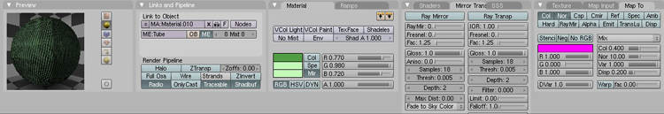
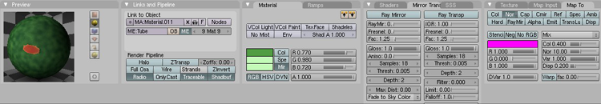

Blender Beginner for Beginner Tutorial: Mech Model Part 2: Texturing
5th June 2010 - Blender 2.47
Having created a basic low-poly mecha model in a previous tutorial, it is now time to liven up the model by texturing it. The application of materials and textures is the hardest part of modelling for me, and I’m not entirely happy with the result. My artistic abilities need some work. However, the general technique is still worth noting. The tutorial will show how the mech model was made to look as below. Later tutorials will show how to rig the model and animate a walk cycle.
UPDATE: I have discovered since writing this tutorial I have textured the mech in completely the wrong way for importing it into game engines. Instead of having multiple materials for the mesh and textures applied to just a few faces, there should be a single material for the entire mesh and textures should be images applied to all the faces. Also normal maps should not be black and white, but a special colour scheme. See the spaceship tutorial for a better way of texturing if the goal is using your model in a game.
- Mech Model Part 1: Modelling
- Mech Model Part 2: Texturing
- Mech Model Part 3: Rigging
- Mech Model Part 4: Animating
-
Start by setting the base material for the model which will be green
hard matte plastic (later a simple camouflage texture will be applied).
On the Link and Materials subpanel of the Editing (F9) panel, create a
new material by clicking the New button under the material selector. By
default this first material will apply to all faces. This is fine for
now. On the Shading (F5) panel set the colour of the new material to a
medium green, (R,G,B) at (0.316, 0.614, 0.267). Then set the specularity
and mirror colours to pale greens, say (0.77, 0.98, 0.72). This will be
the reflected colour which should be very similar to the base colour.
Use an Oren-Nayer Shader as it is good with matte surfaces. I set the
reflection down to 0.6 (as the material is matte and doesn’t reflect too
much) and the roughness very low at 0.5. Use Blinn (as it works well
with Oren-Nayer) for specular highlights with Spec lowered to 0.2 so the
light reflected is quite low, but there is still some. Set the hardness
way down at 1 to make the specular highlights diffuse (that is the edge
of light reflecting off the model should not be sharp).
-
Next apply a camouflage pattern. Create 2 textures using the Textures
panel. One should be a Stucci texture with noise size 0.1, turbulence 5
which becomes the camo detail. The other will be a noise texture for
dirt.
-
When creating new materials, Blender will by default copy the previous
material (or at least the one displayed in the material selector when
new is pressed). So next create those materials with the same camo
texture as the base material to save having to recreate it later.
Firstly a unit number will be placed on the top of the mech. In the
image editing program of your choice (I used
The Gimp) create an image with the
unit number and ensure the background is transparent. If it isn’t
transparent (and a white background is used) then it will affect the
colour of the whole area to which the image is appiled (for a white
background this would make the green paler), not just the bit you want
to add. The image I created and used is here. It
will help if in the next step there is a UV window open. This displays
how any image texture will be applied to the selected faces. RMB on the
join between the 3D view window and the panel window. Select Split
window and size a small window. Then using the Window Type selector
(usually in the bottom left corner of each window), select UV Image
Editor type. Select the top four faces of the mech like the left image,
unwrap (with U KEY) like the right image below and create a new material
just for these faces (create a new material, then click assign to make
it applied to just the selected faces).
-
In a similar manner to the previous step the hatch
image was applied to the right side of the back panel of the mech.
The warning image was applied to the join
between the head and legs and arrow images to
the outside of each knee (so you know which way is forward!). Scale,
rotate and move the UV unwraps to get the images in the right place for
the faces selected. The faces may extend beyond the texture image to
make the image appear smaller than the faces (useful for the arrows).
Remember to set the image textures to clip. Also a good tip to see if
you have the right faces selected for your material is after creating
the material and assigning faces, deselect all faces and use the select
button under “Link and Materials” to see what Blender thinks the faces
for the material should be.
-
UPDATE: The below is the wrong way to affect normals - normal
maps should not be black and white, but a special colour scheme. See the
spaceship tutorial for a better
way of texturing if the goal is using your model in a game.
The face panels of the mech will be a sensor mesh. To that end I created a sensor mesh image. Select the faces and assign them a new material. Also do a UV unwrap with a cube projection and scale them to fit within an applied image (that is the faces all fit inside the UV grid) - this is so the image is applied to all the faces.
 -
As a last little feature let’s place a little laser bud on the nose.
Select just the nose faces. Create two textures: the first a sphere
blend texture (applied to the normals only); and a
little red dot image applied to both normal and colour.
 - Now pack the textures into the blend file. Go to File -\> External Data -\> Make All Paths Relative, then File -\> External Data -\> Pack into .blend file. This loads the image files used for textures on the model into the blender save file itself, so that the blend file contains everything necessary to display the model and the images don’t have to be distributed separately. This last step is not necessary, but I have performed it on the blend file that can be downloaded as an example.
{kind=link}
{kind=link}
{kind=link}
{kind=link}
{kind=link}
{kind=link}
You can download the blend file here. The next stage is to rig the mech for animation and the tutorial for that is available here.

Mech
Texture Blender Model by
Charles
Cordingley is licensed under a
Creative
Commons Attribution 2.0 UK: England & Wales License.